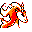

#078
Rapidash
Fire
Very competitive, this Pokémon will chase anything that moves fast in the hopes of racing it
Base stats Total 430
HP75
Attack100
Defense70
Speed105
Special80
Details
- Species
- Fire Horse
- Height
- 5'07"
- Weight
- 209.0 lb
- Catch rate
- 60
- Base exp
- 192
- Growth
- Medium Fast
Level-up moves
LevelMoveType
StartEmberFire
StartTail WhipNormal
StartStompNormal
StartGrowlNormal
Lv 18Fire SpinFire
Lv 22Flame WheelFire
Lv 28AgilityPsychic
Lv 32LungeBug
Lv 34Body SlamNormal
Lv 36FlamethrowerFire
Lv 38Take DownNormal
Lv 42Fire BlastFire
Lv 50Double-EdgeNormal
Evolution
Evolves from Ponyta
Where to find
Not found in the wild — evolve, trade or catch it elsewhere.
TM / HM
TM03 Swords DanceTM06 ToxicTM08 Body SlamTM09 Take DownTM10 Double-EdgeTM15 Hyper BeamTM20 Pay DayTM22 SolarbeamTM31 MimicTM32 Double TeamTM33 ReflectTM34 BideTM37 FlamethrowerTM38 Fire BlastTM39 SwiftTM44 RestTM50 SubstituteHM04 Strength